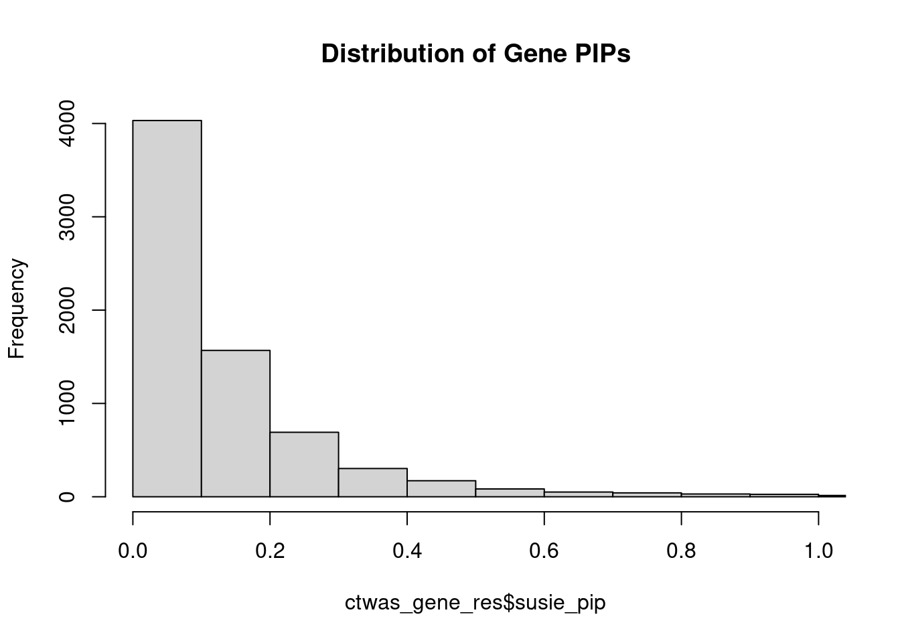
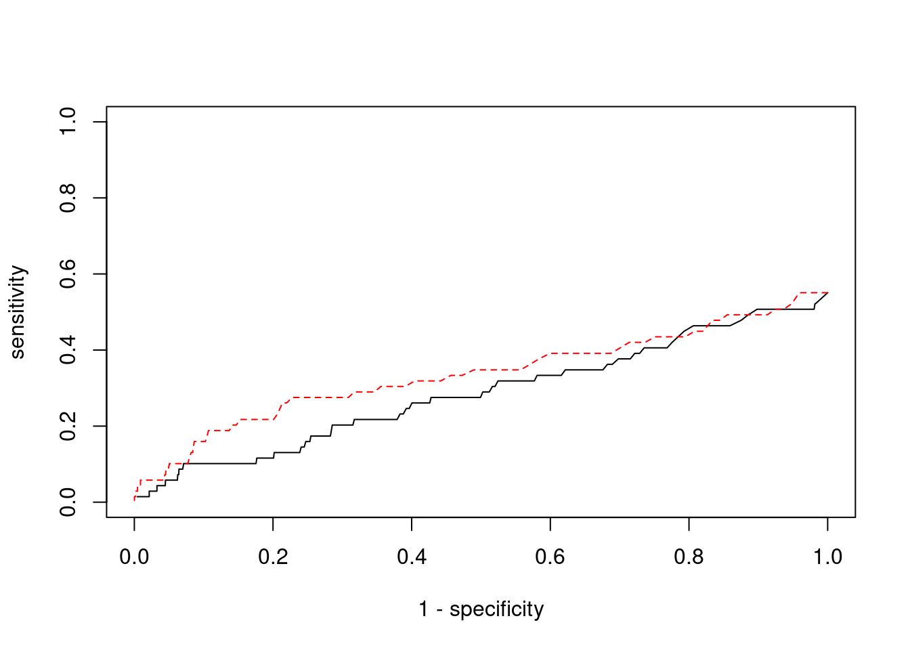

Last updated: 2022-11-04
Checks: 5 2
Knit directory: cTWAS_analysis/
This reproducible R Markdown analysis was created with workflowr (version 1.7.0). The Checks tab describes the reproducibility checks that were applied when the results were created. The Past versions tab lists the development history.
The R Markdown is untracked by Git. To know which version of the R Markdown file created these results, you’ll want to first commit it to the Git repo. If you’re still working on the analysis, you can ignore this warning. When you’re finished, you can run wflow_publish to commit the R Markdown file and build the HTML.
Great job! The global environment was empty. Objects defined in the global environment can affect the analysis in your R Markdown file in unknown ways. For reproduciblity it’s best to always run the code in an empty environment.
The command set.seed(20211220) was run prior to running the code in the R Markdown file. Setting a seed ensures that any results that rely on randomness, e.g. subsampling or permutations, are reproducible.
Great job! Recording the operating system, R version, and package versions is critical for reproducibility.
Nice! There were no cached chunks for this analysis, so you can be confident that you successfully produced the results during this run.
Using absolute paths to the files within your workflowr project makes it difficult for you and others to run your code on a different machine. Change the absolute path(s) below to the suggested relative path(s) to make your code more reproducible.
| absolute | relative |
|---|---|
| /project2/xinhe/shengqian/cTWAS/cTWAS_analysis/data/ | data |
| /project2/xinhe/shengqian/cTWAS/cTWAS_analysis/code/ctwas_config_b38.R | code/ctwas_config_b38.R |
Great! You are using Git for version control. Tracking code development and connecting the code version to the results is critical for reproducibility.
The results in this page were generated with repository version 1585ea7. See the Past versions tab to see a history of the changes made to the R Markdown and HTML files.
Note that you need to be careful to ensure that all relevant files for the analysis have been committed to Git prior to generating the results (you can use wflow_publish or wflow_git_commit). workflowr only checks the R Markdown file, but you know if there are other scripts or data files that it depends on. Below is the status of the Git repository when the results were generated:
Ignored files:
Ignored: .Rhistory
Ignored: .ipynb_checkpoints/
Ignored: analysis/figure/
Untracked files:
Untracked: Proposal plots.R
Untracked: RGS14.pdf
Untracked: RNF186.pdf
Untracked: SCZ_annotation.xlsx
Untracked: SLC8B1.pdf
Untracked: analysis/.ipynb_checkpoints/
Untracked: analysis/LDL_Liver_S_gene_level.Rmd
Untracked: cache/
Untracked: code/.ipynb_checkpoints/
Untracked: code/IBD_ME_3kb_0.05_out/
Untracked: code/LDL_S_out/LDL_Liver.err
Untracked: code/LDL_S_out/LDL_Liver.out
Untracked: code/LDL_out/
Untracked: code/run_IBD_analysis_ME_3kb_0.05.sbatch
Untracked: code/run_IBD_analysis_ME_3kb_0.05.sh
Untracked: code/run_IBD_ctwas_rss_LDR_ME_3kb_0.05.R
Untracked: code/run_LDL_analysis.sbatch
Untracked: code/run_LDL_analysis.sh
Untracked: code/run_LDL_ctwas_rss_LDR.R
Untracked: data/.ipynb_checkpoints/
Untracked: data/FUMA_output/
Untracked: data/GO_Terms/
Untracked: data/IBD_ME/
Untracked: data/LDL/
Untracked: data/LDL_S/
Untracked: data/PGC3_SCZ_wave3_public.v2.tsv
Untracked: data/SCZ/
Untracked: data/SCZ_2014_EUR/
Untracked: data/SCZ_2014_EUR_ME/
Untracked: data/SCZ_2018/
Untracked: data/SCZ_2018_ME/
Untracked: data/SCZ_2018_S/
Untracked: data/SCZ_2020/
Untracked: data/SCZ_S/
Untracked: data/Supplementary Table 15 - MAGMA.xlsx
Untracked: data/Supplementary Table 20 - Prioritised Genes.xlsx
Untracked: data/UKBB/
Untracked: data/UKBB_SNPs_Info.text
Untracked: data/gene_OMIM.txt
Untracked: data/gene_pip_0.8.txt
Untracked: data/gwas_sumstats/
Untracked: data/magma.genes.out
Untracked: data/mashr_Heart_Atrial_Appendage.db
Untracked: data/mashr_sqtl/
Untracked: data/notes.txt
Untracked: data/scz_2018.RDS
Untracked: data/summary_known_genes_annotations.xlsx
Untracked: temp_LDR/
Untracked: top_genes_32.txt
Untracked: top_genes_37.txt
Untracked: top_genes_43.txt
Untracked: top_genes_54.txt
Untracked: top_genes_81.txt
Untracked: z_snp_pos_SCZ.RData
Untracked: z_snp_pos_SCZ_2014_EUR.RData
Untracked: z_snp_pos_SCZ_2018.RData
Untracked: z_snp_pos_SCZ_2020.RData
Unstaged changes:
Deleted: analysis/BMI_S_results.Rmd
Modified: analysis/LDL_Liver.Rmd
Modified: analysis/LDL_Liver_S.Rmd
Deleted: code/LDL_S_out/T2D_Liver.err
Deleted: code/LDL_S_out/T2D_Liver.out
Modified: code/SCZ_out/SCZ_Brain_Amygdala.err
Modified: code/SCZ_out/SCZ_Brain_Amygdala.out
Modified: code/SCZ_out/SCZ_Brain_Anterior_cingulate_cortex_BA24.err
Modified: code/SCZ_out/SCZ_Brain_Anterior_cingulate_cortex_BA24.out
Modified: code/SCZ_out/SCZ_Brain_Caudate_basal_ganglia.err
Modified: code/SCZ_out/SCZ_Brain_Caudate_basal_ganglia.out
Modified: code/SCZ_out/SCZ_Brain_Cerebellar_Hemisphere.err
Modified: code/SCZ_out/SCZ_Brain_Cerebellar_Hemisphere.out
Modified: code/SCZ_out/SCZ_Brain_Cerebellum.err
Modified: code/SCZ_out/SCZ_Brain_Cerebellum.out
Modified: code/SCZ_out/SCZ_Brain_Cortex.err
Modified: code/SCZ_out/SCZ_Brain_Cortex.out
Modified: code/SCZ_out/SCZ_Brain_Frontal_Cortex_BA9.err
Modified: code/SCZ_out/SCZ_Brain_Frontal_Cortex_BA9.out
Modified: code/SCZ_out/SCZ_Brain_Hippocampus.err
Modified: code/SCZ_out/SCZ_Brain_Hippocampus.out
Modified: code/SCZ_out/SCZ_Brain_Hypothalamus.err
Modified: code/SCZ_out/SCZ_Brain_Hypothalamus.out
Modified: code/SCZ_out/SCZ_Brain_Nucleus_accumbens_basal_ganglia.err
Modified: code/SCZ_out/SCZ_Brain_Nucleus_accumbens_basal_ganglia.out
Modified: code/SCZ_out/SCZ_Brain_Putamen_basal_ganglia.err
Modified: code/SCZ_out/SCZ_Brain_Putamen_basal_ganglia.out
Modified: code/SCZ_out/SCZ_Brain_Spinal_cord_cervical_c-1.err
Modified: code/SCZ_out/SCZ_Brain_Spinal_cord_cervical_c-1.out
Modified: code/SCZ_out/SCZ_Brain_Substantia_nigra.err
Modified: code/SCZ_out/SCZ_Brain_Substantia_nigra.out
Deleted: code/run_IBD_ctwas_rss_LDR_ME.R
Modified: code/run_LDL_analysis_S.sbatch
Modified: code/run_LDL_analysis_S.sh
Modified: code/run_LDL_ctwas_rss_LDR_S.R
Modified: code/run_SCZ_analysis.sbatch
Modified: code/run_SCZ_analysis.sh
Modified: code/run_SCZ_ctwas_rss_LDR.R
Note that any generated files, e.g. HTML, png, CSS, etc., are not included in this status report because it is ok for generated content to have uncommitted changes.
There are no past versions. Publish this analysis with wflow_publish() to start tracking its development.
#number of imputed weights
nrow(qclist_all)[1] 21553#number of imputed weights by chromosome
table(qclist_all$chr)
1 2 3 4 5 6 7 8 9 10 11 12 13 14 15 16
2079 1523 1276 769 878 1116 1176 701 854 931 1344 1116 391 772 677 1085
17 18 19 20 21 22
1462 258 1524 659 262 700 #number of imputed weights without missing variants
sum(qclist_all$nmiss==0)[1] 19937#proportion of imputed weights without missing variants
mean(qclist_all$nmiss==0)[1] 0.925library(reticulate)
use_python("/scratch/midway2/shengqian/miniconda3/envs/PythonForR/bin/python",required=T)INFO:numexpr.utils:Note: NumExpr detected 28 cores but "NUMEXPR_MAX_THREADS" not set, so enforcing safe limit of 8.finish#add z scores to results
load(paste0(results_dir, "/", analysis_id, "_expr_z_gene.Rd"))
ctwas_gene_res <- py$ctwas_gene_res_df
ctwas_gene_res$z <- z_gene[ctwas_gene_res$intron_id,]$z
z_snp <- z_snp[z_snp$id %in% ctwas_snp_res$id,]
ctwas_snp_res$z <- z_snp$z[match(ctwas_snp_res$id, z_snp$id)]
#merge gene and snp results with added information
ctwas_snp_res$genename=NA
ctwas_snp_res$gene_type=NA
ctwas_snp_res$intron_id=NA
ctwas_snp_res$intron_pos=NA
saveRDS(ctwas_gene_res, file = paste0(results_dir,"/",analysis_id,"_ctwas_intron_res.RDS"))
saveRDS(ctwas_snp_res, file = paste0(results_dir,"/",analysis_id,"_ctwas_snp_res.RDS"))
Attaching package: 'dplyr'The following objects are masked from 'package:stats':
filter, lagThe following objects are masked from 'package:base':
intersect, setdiff, setequal, unionctwas_res <- rbind(ctwas_gene_res,
ctwas_snp_res[,colnames(ctwas_gene_res)])
#store columns to report
report_cols <- colnames(ctwas_gene_res)[!(colnames(ctwas_gene_res) %in% c("type", "region_tag1", "region_tag2", "cs_index", "gene_type", "z_flag", "id", "chrom", "pos"))]
first_cols <- c("genename", "region_tag")
report_cols <- c(first_cols, report_cols[!(report_cols %in% first_cols)])
report_cols_snps <- c("id", report_cols[-1])
report_cols_snps <- report_cols_snps[!(report_cols_snps %in% "num_sqtl")]
#get number of SNPs from s1 results; adjust for thin argument
ctwas_res_s1 <- data.table::fread(paste0(results_dir, "/", analysis_id, "_ctwas.s1.susieIrss.txt"))
n_snps <- sum(ctwas_res_s1$type=="SNP")/thin
rm(ctwas_res_s1)#distribution of PIPs
hist(ctwas_gene_res$susie_pip, xlim=c(0,1), main="Distribution of Gene PIPs")
#genes with PIP>0.8 or 20 highest PIPs
head(ctwas_gene_res[order(-ctwas_gene_res$susie_pip),report_cols], max(sum(ctwas_gene_res$susie_pip>0.8), 20)) genename region_tag susie_pip mu2 PVE z num_intron
1353 CNIH4 1_114 1.8027 35.42 2.610e-04 5.273 6
2343 FKRP 19_33 1.7010 18.81 1.495e-04 -3.018 5
1053 CCDC57 17_47 1.4400 20.38 1.053e-04 -4.344 19
4796 PXK 3_40 1.2808 53.31 1.553e-04 6.852 6
190 ADHFE1 8_50 1.2508 18.20 6.146e-05 -3.584 14
5488 SLC22A18 11_2 1.1989 19.89 7.752e-05 4.096 13
1623 CYP4F12 19_13 1.1917 36.25 1.315e-04 -5.868 14
3812 MYO15B 17_42 1.1814 35.52 8.339e-05 -4.053 26
3848 NADSYN1 11_40 1.1678 11.24 2.297e-05 1.456 20
119 ACP6 1_73 1.1614 18.88 7.057e-05 3.994 5
4247 PARP9 3_76 1.1591 40.89 1.482e-04 6.409 8
1530 CTC-360G5.8 19_26 1.1535 21.58 7.356e-05 4.428 11
4637 PPP6R2 22_24 1.1406 25.23 8.252e-05 -4.832 14
5313 SEC16B 1_87 1.1343 22.62 6.981e-05 -3.767 15
2919 IL17RC 3_8 1.1248 21.95 5.256e-05 2.782 19
2089 ERGIC3 20_21 1.1191 51.67 1.667e-04 -7.267 5
3301 LRCH4 7_61 1.0948 31.67 1.087e-04 5.294 6
6059 THOP1 19_3 1.0915 27.51 8.892e-05 5.087 7
4378 PHLDB1 11_71 1.0895 23.26 6.229e-05 3.789 8
101 ACCS 11_27 1.0606 12.34 2.970e-05 -1.952 15
2820 HP 16_38 1.0598 273.62 8.764e-04 21.869 6
21 ABCA8 17_39 1.0506 27.86 8.623e-05 -4.775 12
3018 ITGAL 16_24 1.0361 21.82 6.601e-05 -4.428 3
4047 NQO2 6_3 1.0351 13.31 2.705e-05 -1.687 22
534 ASGR1 17_6 1.0344 83.95 2.614e-04 9.645 2
5736 SPRED2 2_42 1.0246 32.05 7.230e-05 -4.438 2
5788 ST3GAL4 11_77 1.0244 76.58 2.204e-04 -12.154 5
2349 FLOT2 17_17 1.0193 31.16 8.363e-05 -3.738 3
3847 NADK2 5_24 1.0159 20.93 6.200e-05 4.321 3
3981 NINL 20_19 1.0000 25.08 6.795e-05 -4.733 7
3226 LDLR 19_9 1.0000 751.97 2.188e-03 26.898 2
6593 USP53 4_77 0.9986 26.01 7.209e-05 4.888 4
3200 LAMA5 20_36 0.9982 14.84 2.480e-05 1.946 16
883 C2orf42 2_46 0.9963 22.94 5.154e-05 -3.356 12
2771 HLA-B 6_25 0.9916 62.55 1.790e-04 8.790 11
6591 USP47 11_9 0.9913 19.00 4.980e-05 3.654 7
6135 TMEM150A 2_54 0.9866 19.99 5.486e-05 4.079 4
4626 PPP2R5C 14_53 0.9859 20.51 5.247e-05 -3.976 6
813 C14orf159 14_46 0.9817 18.47 2.745e-05 2.224 17
4413 PIH1D1 19_34 0.9810 23.13 6.245e-05 3.988 7
45 ABHD12 20_18 0.9713 26.14 6.203e-05 -4.696 7
681 BCAT2 19_34 0.9682 27.94 7.568e-05 -5.197 2
4870 RALGDS 9_70 0.9665 17.53 4.588e-05 3.277 4
5408 SH3BP2 4_3 0.9603 21.48 4.788e-05 2.887 10
3121 KIF13B 8_28 0.9476 23.56 6.155e-05 -4.718 1
4569 POR 7_48 0.9384 33.80 7.885e-05 -5.646 5
5910 TACC1 8_34 0.9325 18.93 4.616e-05 3.936 4
1040 CCDC159 19_10 0.9318 40.93 7.676e-05 -3.958 7
6115 TMED4 7_32 0.9194 28.69 6.984e-05 -4.609 3
4448 PLA2G6 22_15 0.9176 15.78 3.232e-05 -2.419 14
5721 SPHK2 19_33 0.9153 42.12 1.026e-04 8.721 2
31 ABCC3 17_29 0.9118 13.25 2.257e-05 -1.908 16
3778 MTSS1L 16_37 0.9096 17.51 4.056e-05 -2.815 7
6524 UGT1A1 2_137 0.9090 30.83 6.881e-05 5.450 4
898 C5 9_62 0.9073 24.46 4.818e-05 -4.725 8
4365 PHC1 12_9 0.9054 36.98 8.822e-05 6.156 1
3083 KDM1A 1_16 0.8913 22.63 4.809e-05 4.158 3
4965 REPS1 6_92 0.8869 34.02 6.208e-05 3.381 8
1609 CYP2C8 10_61 0.8844 17.74 3.879e-05 3.549 8
2552 GNMT 6_33 0.8810 24.77 5.145e-05 -4.897 4
2358 FMO3 1_84 0.8770 23.11 3.982e-05 4.221 9
6240 TNK2 3_120 0.8753 23.32 3.771e-05 2.814 10
1392 COL18A1 21_23 0.8702 18.80 2.432e-05 -2.110 15
763 BRD9 5_1 0.8564 19.17 3.832e-05 3.964 12
5790 ST3GAL6 3_62 0.8559 27.99 4.872e-05 3.387 9
4818 R3HDM2 12_36 0.8555 36.25 7.375e-05 -5.818 3
525 ASAP3 1_16 0.8532 25.69 5.020e-05 -4.936 7
3619 MMAB 12_66 0.8529 18.44 3.180e-05 3.833 11
282 ALDH1A2 15_26 0.8444 62.53 1.146e-04 -7.783 9
1724 DENND5A 11_8 0.8428 22.43 3.220e-05 3.050 9
4580 PPCDC 15_35 0.8401 18.78 3.588e-05 4.030 5
1630 CYSTM1 5_83 0.8389 18.90 3.795e-05 -4.021 4
5814 STAU1 20_30 0.8386 21.35 4.004e-05 4.296 6
4361 PGS1 17_45 0.8372 48.60 9.077e-05 -7.141 5
1948 EFNA1 1_76 0.8364 28.21 5.706e-05 3.331 3
5926 TANGO2 22_4 0.8325 19.01 3.475e-05 -3.713 9
5365 SERPINF2 17_2 0.8273 20.50 3.732e-05 4.092 5
5352 SEPT2 2_144 0.8273 19.09 3.419e-05 3.767 9
2963 INPPL1 11_40 0.8260 12.15 1.504e-05 -1.424 12
3821 MYO9B 19_14 0.8226 20.72 3.883e-05 -4.344 7
1480 CRELD1 3_8 0.8185 19.42 2.475e-05 2.483 14
5440 SIPA1 11_36 0.8120 20.64 3.793e-05 -4.440 5
4132 NUP88 17_5 0.8105 19.78 2.973e-05 3.087 11
6328 TRIM4 7_61 0.8100 24.15 4.431e-05 -4.329 3
6693 WDR27 6_111 0.8061 16.95 1.531e-05 1.828 22
5255 SBNO2 19_2 0.8007 31.61 4.431e-05 3.473 12
num_sqtl
1353 7
2343 5
1053 26
4796 7
190 14
5488 20
1623 16
3812 38
3848 27
119 6
4247 10
1530 13
4637 15
5313 16
2919 24
2089 6
3301 7
6059 7
4378 8
101 19
2820 9
21 15
3018 3
4047 39
534 2
5736 2
5788 10
2349 3
3847 3
3981 7
3226 3
6593 5
3200 25
883 14
2771 28
6591 7
6135 4
4626 7
813 21
4413 7
45 9
681 2
4870 4
5408 11
3121 1
4569 6
5910 4
1040 8
6115 4
4448 22
5721 2
31 20
3778 7
6524 4
898 9
4365 1
3083 3
4965 10
1609 8
2552 4
2358 9
6240 11
1392 16
763 15
5790 10
4818 3
525 7
3619 19
282 9
1724 10
4580 7
1630 6
5814 6
4361 5
1948 4
5926 9
5365 7
5352 10
2963 13
3821 7
1480 16
5440 6
4132 15
6328 5
6693 33
5255 14#set nominal signifiance threshold for z scores
alpha <- 0.05
#bonferroni adjusted threshold for z scores
sig_thresh <- qnorm(1-(alpha/nrow(ctwas_gene_res)/2), lower=T)library("readxl")
known_annotations <- read_xlsx("data/summary_known_genes_annotations.xlsx", sheet="LDL")New names:known_annotations <- unique(known_annotations$`Gene Symbol`)
unrelated_genes <- ctwas_gene_res$genename[!(ctwas_gene_res$genename %in% known_annotations)]
#number of genes in known annotations
print(length(known_annotations))[1] 69#number of genes in known annotations with imputed expression
print(sum(known_annotations %in% ctwas_gene_res$genename))[1] 38#assign ctwas, TWAS, and bystander genes
ctwas_genes <- ctwas_gene_res$genename[ctwas_gene_res$susie_pip>0.9]
twas_genes <- ctwas_gene_res$genename[abs(ctwas_gene_res$z)>sig_thresh]
novel_genes <- ctwas_genes[!(ctwas_genes %in% twas_genes)]
#significance threshold for TWAS
print(sig_thresh)[1] 4.49#number of ctwas genes
length(ctwas_genes)[1] 56#number of TWAS genes
length(twas_genes)[1] 219#show novel genes (ctwas genes with not in TWAS genes)
ctwas_gene_res[ctwas_gene_res$genename %in% novel_genes,report_cols] genename region_tag susie_pip mu2 PVE z num_intron
31 ABCC3 17_29 0.9118 13.25 2.257e-05 -1.908 16
101 ACCS 11_27 1.0606 12.34 2.970e-05 -1.952 15
119 ACP6 1_73 1.1614 18.88 7.057e-05 3.994 5
190 ADHFE1 8_50 1.2508 18.20 6.146e-05 -3.584 14
813 C14orf159 14_46 0.9817 18.47 2.745e-05 2.224 17
883 C2orf42 2_46 0.9963 22.94 5.154e-05 -3.356 12
1040 CCDC159 19_10 0.9318 40.93 7.676e-05 -3.958 7
1053 CCDC57 17_47 1.4400 20.38 1.053e-04 -4.344 19
1530 CTC-360G5.8 19_26 1.1535 21.58 7.356e-05 4.428 11
2343 FKRP 19_33 1.7010 18.81 1.495e-04 -3.018 5
2349 FLOT2 17_17 1.0193 31.16 8.363e-05 -3.738 3
2919 IL17RC 3_8 1.1248 21.95 5.256e-05 2.782 19
3018 ITGAL 16_24 1.0361 21.82 6.601e-05 -4.428 3
3200 LAMA5 20_36 0.9982 14.84 2.480e-05 1.946 16
3778 MTSS1L 16_37 0.9096 17.51 4.056e-05 -2.815 7
3812 MYO15B 17_42 1.1814 35.52 8.339e-05 -4.053 26
3847 NADK2 5_24 1.0159 20.93 6.200e-05 4.321 3
3848 NADSYN1 11_40 1.1678 11.24 2.297e-05 1.456 20
4047 NQO2 6_3 1.0351 13.31 2.705e-05 -1.687 22
4378 PHLDB1 11_71 1.0895 23.26 6.229e-05 3.789 8
4413 PIH1D1 19_34 0.9810 23.13 6.245e-05 3.988 7
4448 PLA2G6 22_15 0.9176 15.78 3.232e-05 -2.419 14
4626 PPP2R5C 14_53 0.9859 20.51 5.247e-05 -3.976 6
4870 RALGDS 9_70 0.9665 17.53 4.588e-05 3.277 4
5313 SEC16B 1_87 1.1343 22.62 6.981e-05 -3.767 15
5408 SH3BP2 4_3 0.9603 21.48 4.788e-05 2.887 10
5488 SLC22A18 11_2 1.1989 19.89 7.752e-05 4.096 13
5736 SPRED2 2_42 1.0246 32.05 7.230e-05 -4.438 2
5910 TACC1 8_34 0.9325 18.93 4.616e-05 3.936 4
6135 TMEM150A 2_54 0.9866 19.99 5.486e-05 4.079 4
6591 USP47 11_9 0.9913 19.00 4.980e-05 3.654 7
num_sqtl
31 20
101 19
119 6
190 14
813 21
883 14
1040 8
1053 26
1530 13
2343 5
2349 3
2919 24
3018 3
3200 25
3778 7
3812 38
3847 3
3848 27
4047 39
4378 8
4413 7
4448 22
4626 7
4870 4
5313 16
5408 11
5488 20
5736 2
5910 4
6135 4
6591 7#sensitivity / recall
sensitivity <- rep(NA,2)
names(sensitivity) <- c("ctwas", "TWAS")
sensitivity["ctwas"] <- sum(ctwas_genes %in% known_annotations)/length(known_annotations)
sensitivity["TWAS"] <- sum(twas_genes %in% known_annotations)/length(known_annotations)
sensitivity ctwas TWAS
0.01449 0.05797 #specificity
specificity <- rep(NA,2)
names(specificity) <- c("ctwas", "TWAS")
specificity["ctwas"] <- sum(!(unrelated_genes %in% ctwas_genes))/length(unrelated_genes)
specificity["TWAS"] <- sum(!(unrelated_genes %in% twas_genes))/length(unrelated_genes)
specificity ctwas TWAS
0.9921 0.9692 #precision / PPV
precision <- rep(NA,2)
names(precision) <- c("ctwas", "TWAS")
precision["ctwas"] <- sum(ctwas_genes %in% known_annotations)/length(ctwas_genes)
precision["TWAS"] <- sum(twas_genes %in% known_annotations)/length(twas_genes)
precision ctwas TWAS
0.01786 0.01826 #ROC curves
pip_range <- (0:1000)/1000
sensitivity <- rep(NA, length(pip_range))
specificity <- rep(NA, length(pip_range))
for (index in 1:length(pip_range)){
pip <- pip_range[index]
ctwas_genes <- ctwas_gene_res$genename[ctwas_gene_res$susie_pip>=pip]
sensitivity[index] <- sum(ctwas_genes %in% known_annotations)/length(known_annotations)
specificity[index] <- sum(!(unrelated_genes %in% ctwas_genes))/length(unrelated_genes)
}
plot(1-specificity, sensitivity, type="l", xlim=c(0,1), ylim=c(0,1))
sig_thresh_range <- seq(from=0, to=max(abs(ctwas_gene_res$z)), length.out=length(pip_range))
for (index in 1:length(sig_thresh_range)){
sig_thresh_plot <- sig_thresh_range[index]
twas_genes <- ctwas_gene_res$genename[abs(ctwas_gene_res$z)>=sig_thresh_plot]
sensitivity[index] <- sum(twas_genes %in% known_annotations)/length(known_annotations)
specificity[index] <- sum(!(unrelated_genes %in% twas_genes))/length(unrelated_genes)
}
lines(1-specificity, sensitivity, xlim=c(0,1), ylim=c(0,1), col="red", lty=2)
sessionInfo()R version 4.1.0 (2021-05-18)
Platform: x86_64-pc-linux-gnu (64-bit)
Running under: CentOS Linux 7 (Core)
Matrix products: default
BLAS/LAPACK: /software/openblas-0.3.13-el7-x86_64/lib/libopenblas_haswellp-r0.3.13.so
locale:
[1] LC_CTYPE=en_US.UTF-8 LC_NUMERIC=C
[3] LC_TIME=en_US.UTF-8 LC_COLLATE=en_US.UTF-8
[5] LC_MONETARY=en_US.UTF-8 LC_MESSAGES=en_US.UTF-8
[7] LC_PAPER=en_US.UTF-8 LC_NAME=C
[9] LC_ADDRESS=C LC_TELEPHONE=C
[11] LC_MEASUREMENT=en_US.UTF-8 LC_IDENTIFICATION=C
attached base packages:
[1] stats graphics grDevices utils datasets methods base
other attached packages:
[1] readxl_1.4.0 dplyr_1.0.9 reticulate_1.26 workflowr_1.7.0
loaded via a namespace (and not attached):
[1] tidyselect_1.1.2 xfun_0.24 bslib_0.4.0 purrr_0.3.4
[5] lattice_0.20-44 vctrs_0.4.1 generics_0.1.2 htmltools_0.5.3
[9] yaml_2.2.1 utf8_1.2.2 rlang_1.0.4 later_1.2.0
[13] pillar_1.7.0 jquerylib_0.1.4 DBI_1.1.2 glue_1.6.2
[17] lifecycle_1.0.1 stringr_1.4.0 cellranger_1.1.0 evaluate_0.15
[21] knitr_1.33 callr_3.7.0 fastmap_1.1.0 httpuv_1.6.1
[25] ps_1.7.0 fansi_1.0.3 highr_0.9 Rcpp_1.0.9
[29] promises_1.2.0.1 cachem_1.0.6 jsonlite_1.8.0 fs_1.5.2
[33] png_0.1-7 digest_0.6.29 stringi_1.7.6 processx_3.5.3
[37] getPass_0.2-2 rprojroot_2.0.3 grid_4.1.0 here_1.0.1
[41] cli_3.3.0 tools_4.1.0 magrittr_2.0.3 sass_0.4.0
[45] tibble_3.1.7 crayon_1.5.1 whisker_0.4 pkgconfig_2.0.3
[49] ellipsis_0.3.2 Matrix_1.3-3 data.table_1.14.2 assertthat_0.2.1
[53] rmarkdown_2.9 httr_1.4.3 rstudioapi_0.13 R6_2.5.1
[57] git2r_0.28.0 compiler_4.1.0